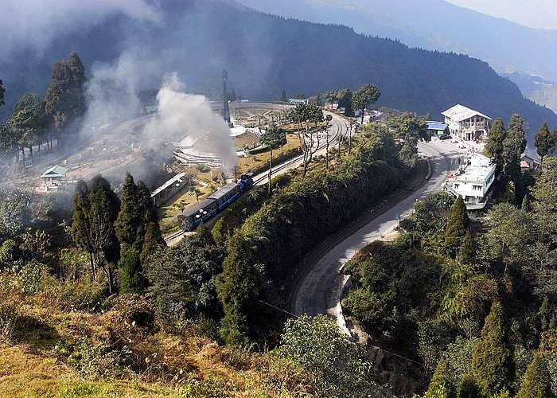
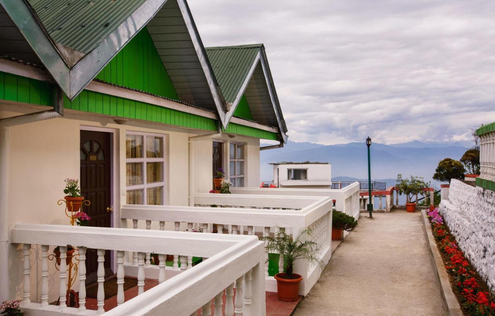
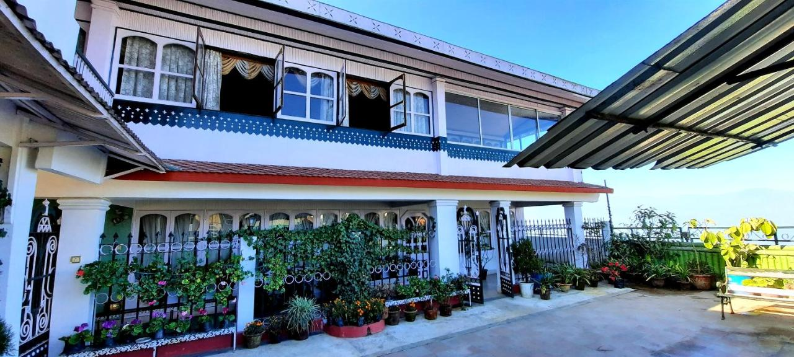
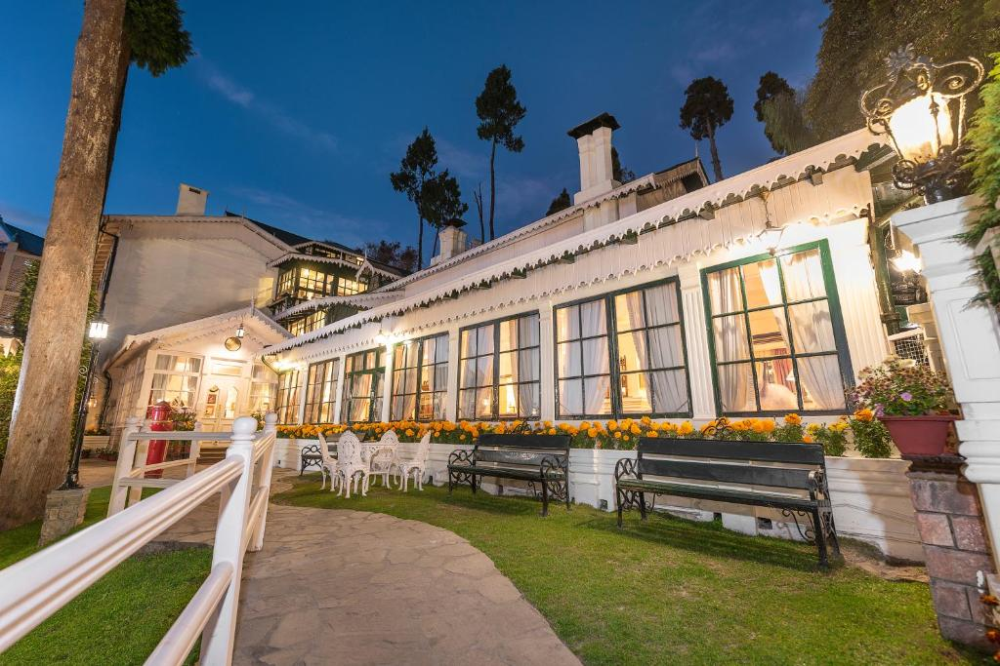
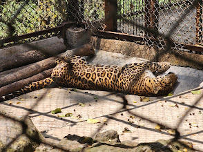
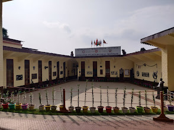
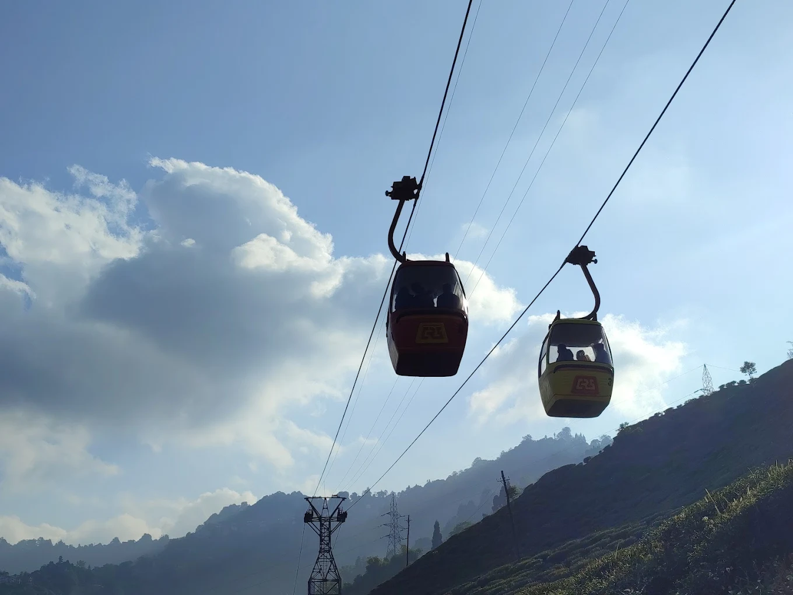

Darjeeling is a town in India's West Bengal state, in the Himalayan foothills. Once a summer resort for the British Raj elite, it remains the terminus of the narrow-gauge Darjeeling Himalayan Railway, or “Toy Train,” completed in 1881. It's famed for the distinctive black tea grown on plantations that dot its surrounding slopes. Its backdrop is Mt. Kanchenjunga, among the world’s highest peaks.

Sterling Darjeeling
Sterling Darjeeling is located 2316 metres above sea level, 1 km from Ghoom Railway Station. The property has free WiFi in the lobby and restaurant. Rooms are fitted with a cable TV, telephone and tea/coffee-making facilities. Private bathrooms are fitted with toiletries and shower facilities. Room service is also provided.

Yuma D Homestay
Featuring city views and a garden, Yuma D Homestay features accommodation attractively located in Darjeeling, within a short distance of Himalayan Mountaineering Institute And Zoological Park, Mahakal Mandir and Happy Valley Tea Estate. Featuring mountain and garden views, this homestay also comes with free WiFi. Ghoom Monastery is 8 km from the homestay and Tibetan Buddhist Monastery Darjeeling is 8.3 km away.

The Elign,Darjeeling-Heritage resort and spa
Featuring a garden and a terrace, The Elgin Hotel offers elegant accommodation in Darjeeling. With bike rental, the property is 2 km from the Darjeeling Himalayan Mountaineering Institute and 4.8 km from the Darjeeling Himalayan Zoological Park.

Padmaja naidu Himalayan zoological park
The zoo was opened in 1958, and an average elevation of 7,000 feet (2,134 m), is the largest high altitude zoo in India. It specializes in breeding animals ...

Himalayan Mountaineering Institute
The Himalayan Mountaineering Institute (HMI) is one of the premier Mountaineering Institutes in the world. Founded on November 4, 1954, by Pandit Jawaharlal Nehru, the first Prime Minister of India, to commemorate the first successful ascent of Mount Everest by the late Tenzing Norgay Sherpa & Sir Edmund Hillary.

Darjeeling rangeet valley passenger ropeway
The Darjeeling Ropeway is a ropeway in the town of Darjeeling in the Indian state of West Bengal. The 5 km long ropeway is a tourist destination in the town. It consists of sixteen cars and plies between the "North Point" in the town of Darjeeling and Singla on the banks of the Ramman river.